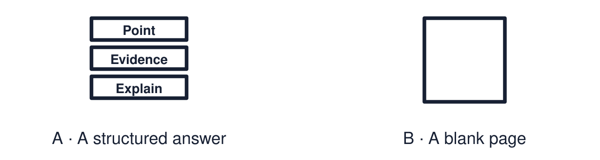

Arrival choices
Previous lesson reminder:

Start with 1 and 2. Try 3 and 4 when ready. Reading and exact scribing are available.
1 Give one similarity or difference between the two responses.
Support: Use the reminder strip or talk it through with an adult.
2 Which meaning fits evidence?
Support: Choose: An example or fact that supports the point OR Directly connected to the question.
3 What makes evidence relevant?
Support: Use the model evidence anchor B or read one relevant card together.
4 Must every pupil write the same length of answer?
Support: Give a reason when ready.
Stretch: use a precise example or explain which detail supports your answer.
Evidence cards
Read, point or listen. Keep the source label with any detail you use.
A The assessment question
“Explain how beliefs and worldviews can influence identity, values or choices.”
Source: Authored assessment task
Limit: Use evidence from this half-term.
B Selecting evidence
Relevant evidence answers this question. Ask: does it show a belief leading to a value, a choice or a sense of identity?
Source: Authored classroom resource
Limit: Interesting facts are not always relevant.
C Evidence bank
Daniel and care work · Priya and volunteering · Amira and the Qur’an · the mosque open day · the two remembrance sources.
Source: Authored classroom resource
Limit: Choose the evidence you can explain.
D Routes
Written: three sentences or more. Structured: complete the point, evidence, explain frame. Supported: answer aloud with a scribe or recorder.
Source: Authored classroom resource
Limit: Use your normal way of working.
Evidence cards continued
Read, point or listen. Keep the source label with any detail you use.
E1 Assessment source Daniel
Fictional profile: Daniel is 24, Christian and a care worker. He says, “I believe every person is made in the image of God, so everyone deserves dignity.” He chose care work over a better-paid job.
Source: Authored profile
Limit: This is one person's view. Others who share the worldview may describe it differently.
E2 Assessment source Priya
Fictional profile: Priya is 26 and a Humanist. She says, “This is the one life we have, so I want mine to be useful.” She volunteers as a mentor and gives blood.
Source: Authored profile
Limit: This is one person's view. Others who share the worldview may describe it differently.
Shared investigation
1. Match each piece of evidence to what it best shows.
2. Plan one answer together using the frame.
Work with a partner or adult, or use your own table. One person suggests; the other checks the evidence. Swap after one turn. Passing is allowed.
Move or match the cards
| Cards to use |
|---|
| Amira turns to the Qur’an on honesty |
| Priya: “I want my life to be useful” |
| Daniel chose care work |
Possible labels: Authority influencing values / Belief influencing a choice / Belief influencing identity
Support: Use the glossary and one chunk of evidence. Plan the claim and supporting detail before explaining.
Further challenge: Include a second worldview and compare the influence.
Supported independent task
Complete this route only. Use evidence from the half-term to explain how beliefs and worldviews can influence identity, values or choices.
1. Choose your evidence from the bank.
2. Answer aloud or with a scribe: point, then example.
3. Add one “because”.
Support: Use the glossary and one chunk of evidence. Plan the claim and supporting detail before explaining. Complete the organiser one space at a time. Point: ___. For example, ___. This shows ___ because ___.
An adult may read or scribe your exact response. They should not choose the answer.
Standard independent task
Complete this route only. Use evidence from the half-term to explain how beliefs and worldviews can influence identity, values or choices.
1. Write your point.
2. Add evidence from the half-term.
3. Explain using “because” or “therefore”.
Support: Point: ___. For example, ___. This shows ___ because ___.
Check the required evidence and revise one detail.
Stretch independent task
Complete this route only. Use evidence from the half-term to explain how beliefs and worldviews can influence identity, values or choices.
1. Write a full answer using two pieces of evidence.
2. Compare the influence in two worldviews.
3. Self-assess one strength and one next step.
Support: Choose the evidence independently. Use the frame only if it helps.
Include a second worldview and compare the influence.
Exit ticket
Choose a response mode. You may give your answers privately to an adult.
What makes evidence relevant?
Must every pupil write the same length of answer?
Support: Point: ___. For example, ___. This shows ___ because ___.
Further challenge: Include a second worldview and compare the influence.